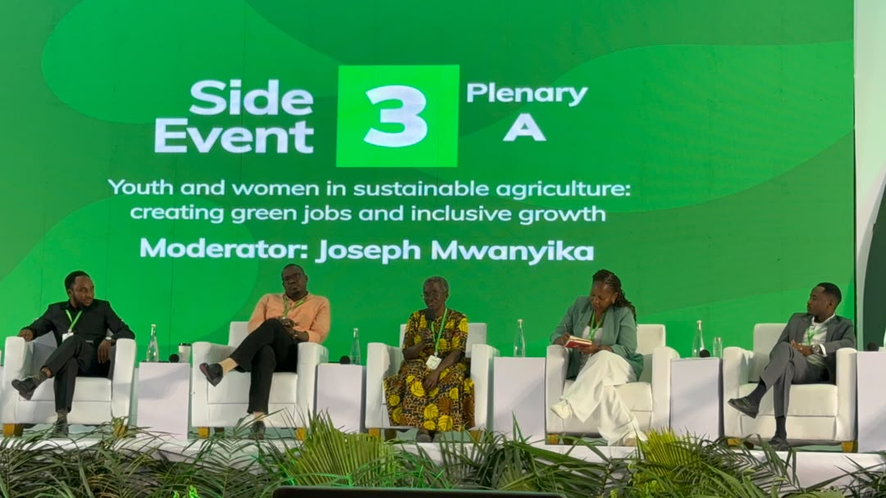
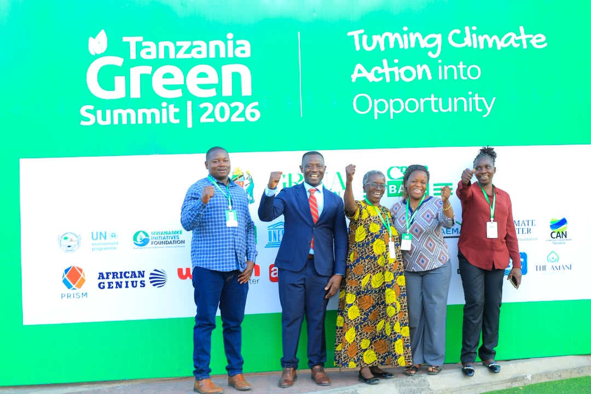

ACF at the Summit
The Tanzania Green Summit brought together government agencies, development partners, and civil-society organizations to accelerate green growth and climate-resilient development across Tanzania. Africa Climate Finance participated in panel discussions on climate finance access, presented the Rungwe microfinance model, and connected with prospective partners.
Gallery
Photos from the Tanzania Green Summit 2026. Add your summit images to assets/img/summit/ and update the gallery below.


Key Takeaways
Climate Finance Access
The summit reinforced that local institutions with proven track records — like Central Bank of Tanzania-licensed microfinance — are critical intermediaries for channeling climate capital to where it is needed most.
Partnership Opportunities
ACF connected with several prospective partners and government stakeholders for upcoming project preparation work, expanding the pipeline beyond the existing FP179 and FP223 proposals.